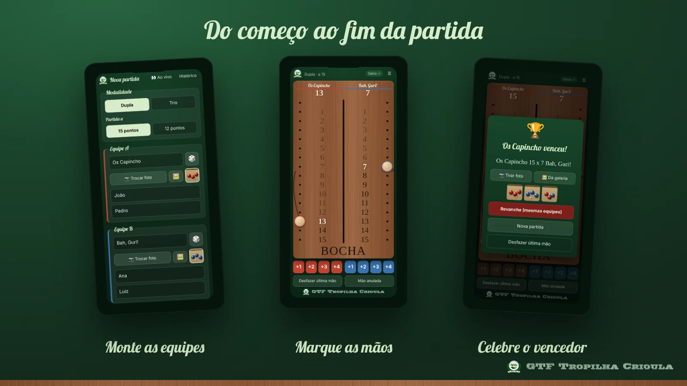
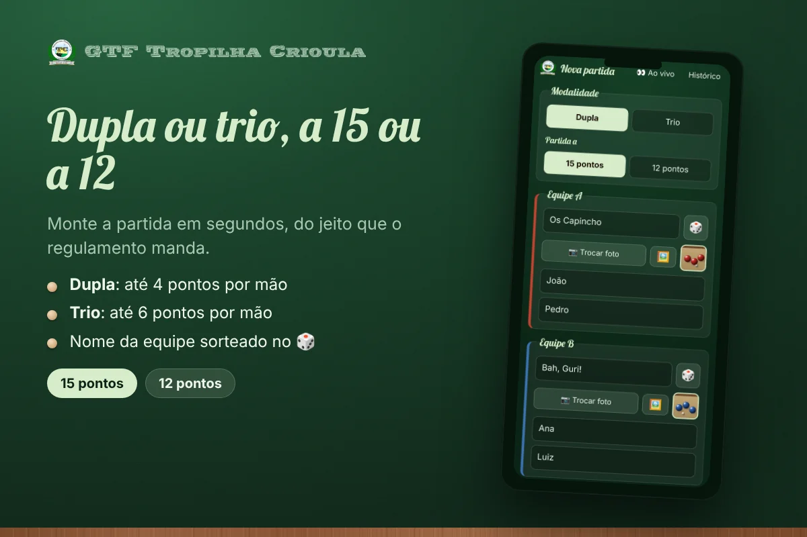
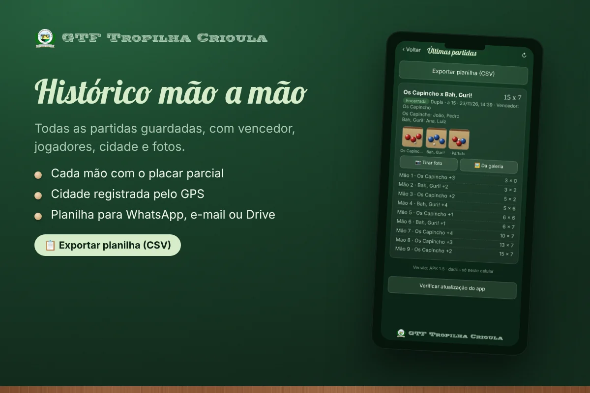

Depto. de Esportes Tradicionais
Placar de Bocha
O aplicativo do Tropilha para marcar as partidas de bocha, no celular ou no navegador.



O aplicativo
Placar digital para a cancha
O Placar de Bocha substitui a anotação em papel: tem uma tábua de madeira com pinos, partidas em dupla ou trio, a 15 ou a 12 pontos, e guarda o histórico de todos os jogos.
Foi desenvolvido pelo Tropilha para as canchas da Sede Esportiva e está liberado para quem quiser usar.


Acesse
Jogue, baixe ou acompanhe
Recursos
O que o aplicativo faz
Partidas
Dupla ou trio, a 15 ou a 12 pontos, com desfazer, mão anulada e revanche.
Equipes
Sugestão de nomes gaúchos (🎲) e fotos das equipes e da partida.
Local
GPS com o registro da cidade onde a partida aconteceu.
Histórico
Todas as partidas guardadas, com exportação em planilha (CSV) no aplicativo Android.
Sem internet
O aplicativo Android funciona sem conexão e sem PIN, guardando os dados no próprio celular.
Atualização
O Android avisa quando sai versão nova, e ela se instala por cima sem perder os dados.
Documentos
Manual e regulamento
Participe
Fale com a gente
Dúvidas, PIN de acesso e sugestões pelo WhatsApp (51) 98088-1334 ou pelo e-mail gtftropilhacrioula@gmail.com.